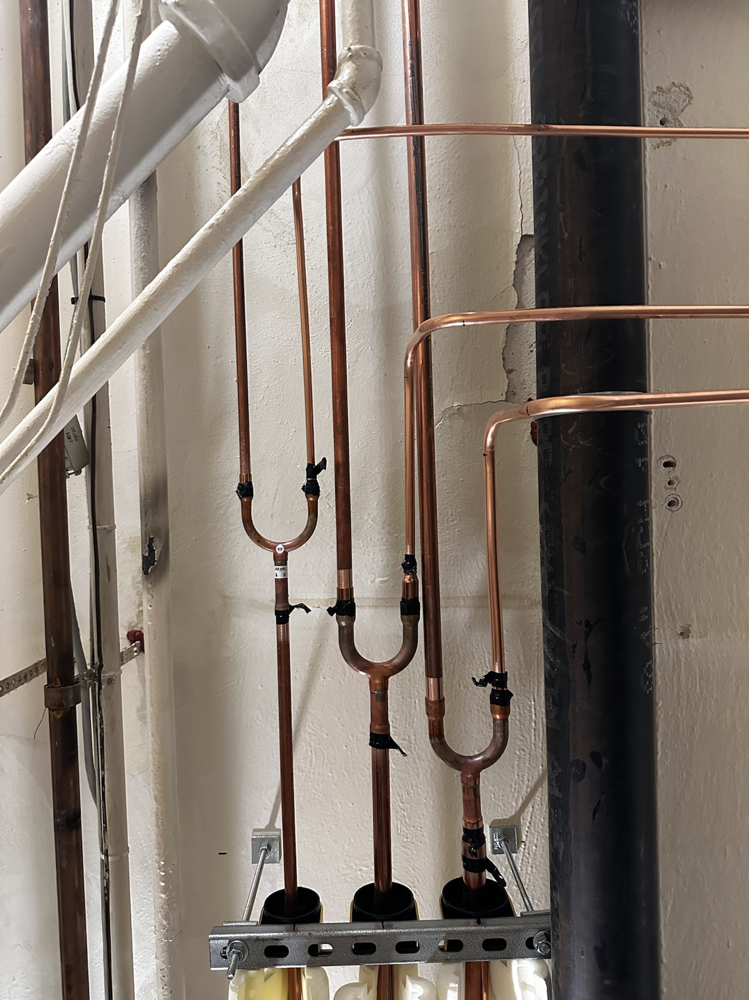
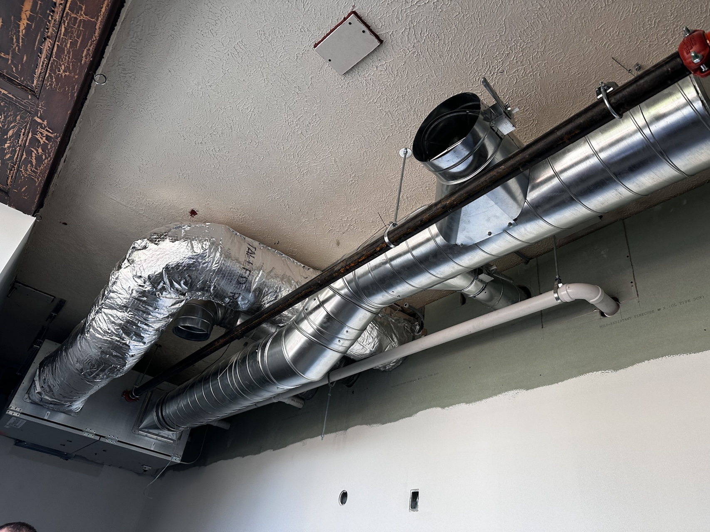
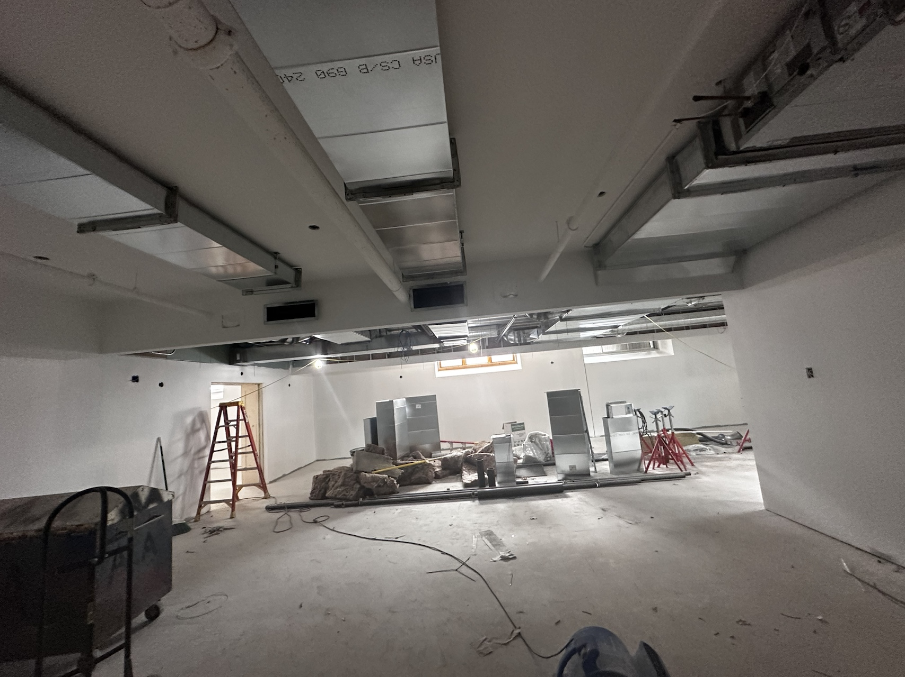
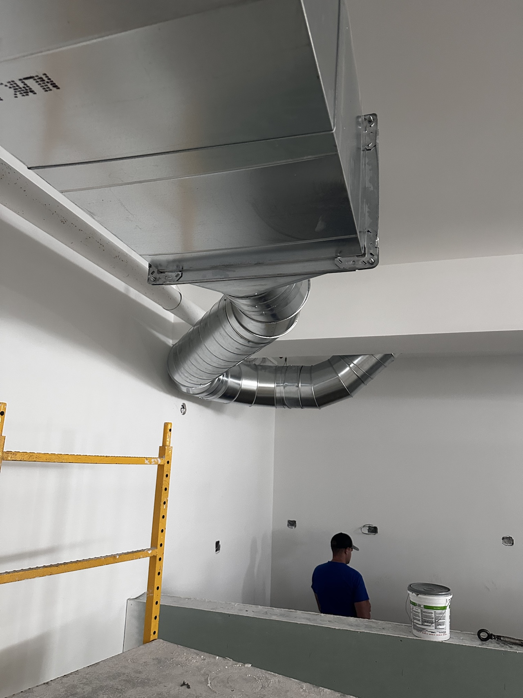

The last night, and a short one. We open with a game — the whole course on one board — then I explain the one page left in the Encore, the Cross-System Integration Sheet, and show you what those collisions actually look like on a real job site. Then I let you go early to build it on your own time. Two hours, then the hall is yours.
There is no new content in this course after tonight. The catalog is covered: acoustics, illumination, electrical, sound reinforcement, emergency power. So we are going to keep tonight short and useful — about two hours — and then I let you go early to spend the rest of your evening on the Encore itself.
Here is the shape of the night. We start with a game that runs the whole ten weeks past you on one board — a fair, low-stakes way to find out what actually stuck. Then I explain the one genuinely new page left in the Encore, the Cross-System Integration Sheet, and show you what those system collisions look like on a real construction site — photos from a project I have in the field right now. Then you are free to build your own sheet on your own time. By the end you should be able to:
Two hours, and then you are free. I teach nothing new — I run a game, explain one page, show you the field, and release you to work. The clock is soft: if the game is fun and the questions are flowing, let it run; the release just comes a little later. Nobody is staying past 21:30.
Two quick things before we get to work — both matter, and both take five minutes.
The single most reliable way to not fill out a course evaluation is to plan to do it later. So we do it now, together, in the first ten minutes. Find the email from the university or the link in Canvas. It is completely anonymous — I never see who wrote what, only the aggregate after grades are posted.
This course is brand new, built from scratch this term, and I am going to teach it again. Concrete beats polite: “the Week 4 workload spiked” or “the LightStanza workflow needed a demo two weeks earlier” is worth more than “good class.” Tell me what to keep and what to cut.
The developer of the Acouso acoustics plugin for Revit asked me for feedback from people who’ve actually used it in a design workflow — which is all of you. If you ran it this term, or want to give it a look before Sunday, I’m collecting impressions tonight and passing them along.
Useful things to note: what it did well, where it slowed you down or confused you, what you expected it to do and it didn’t, and whether the results squared with your hand calcs from Act I. Raise it in the chat or say it out loud — I’ll write it down.
Before anything heavy, we play. Ten weeks is a lot of ground — RT60 in Week 1, critical distance in Week 9 — and the friendliest way to find out what actually stuck is to put it all on a board and let three teams fight over it. It is low-stakes, it is a little competitive, and it doubles as the world’s most painless Encore review: every answer on the board is something you may want in your final package.
I share my screen, split the class into three teams (so everyone remembers who they are playing for), and we run the board. Click a tile, read the clue, first team to answer takes it. Keep it loose — the point is the laugh and the “oh right, that’s what NC-25 means,” not the score.
Five categories — Acoustics, Daylight & Sun, Illumination, Power & Safety, and Voice & Integration — five clues each, $100 to $500 by difficulty. Click a tile to show the clue, offer a Hint if a team is stuck, hit Reveal Answer, then award the points. Three teams, live scoreboard, editable names — so everyone knows who they’re playing for.
To run it live: use the board below, or hit Fullscreen for the cleanest screen-share on Zoom. No internet needed once it loads.
You saw this last week; here it is once more, because it closes the course and it is worth 60 points — more than all three Act Reviews combined. It is not a fourth act. Almost everything in the package is work you have already done, assembled and corrected. What is genuinely new is three short pieces — and the first of them is what we build tonight.
Three acts, three systems, one building — assembled, revised, and finally forced to account for each other.
The three new pieces:
1 · The Cross-System Integration Sheet. At least three documented collisions, each with the numbers on both sides, a named winner, and a stated cost. We cover exactly how to build it tonight (§ 06) — and it is worth as much as an entire act.
2 · The Week 9 Systems Addendum. One page each on reinforcement (a critical-distance check against your own RT60) and emergency power (your egress layer as the emergency branch, with the 10 s / 90 min / 1 fc criteria named). Everything you need is in last week’s § 05 and § 06.
3 · The Final Retrospective. What would you do differently if you started this hall over on Monday? Specific enough that a peer could act on it. We cover how to write it in § 09.
Everything else — the plans, the three act summary sheets, the Decision Log — is revision. The video is extra credit (up to +5, cannot hurt you). Five minutes, screen-share, one real decision and one honest failure.
Read the full Encore brief & rubric →Here is the whole method, and then I’ll run one collision live on a demo hall so you can see the shape of it before you go hunting in your own set. A good integration entry has four moves, in order — skip any one and it reads as decoration instead of engineering.
Name the two systems and the single thing they both want — a surface, a watt, an opening, a cubic foot, a dollar. If you can’t name what is shared, there is no collision.
Test: can you finish the sentence “___ needs this to be X, but ___ needs it to be Y”? If yes, you have one.
Attach the metric to each side. Not “it’s too dark” — “the acoustic finish is 12% reflectance, but my CU assumed 50%, so my fixture count is 30% low.” Numbers make the trade-off arguable instead of aesthetic.
Source: pull the numbers from work you already did — RT60 worksheet, lumen calc, panel schedule, LPD verdict, PV sizing. This is why your acts have to be open.
Which system won, which gave way, and what the loser paid for it. “Acoustics wins; I keep the porous finish and add two fixtures, +90 W, which costs me 0.4 against my LPD margin.” A real decision has a loser.
Trap: if your resolution has no cost, you probably dodged the collision instead of resolving it. Go back to move 1.
The resolution has to land somewhere real — a revised fixture count, a moved cloud, a re-drawn panel, a note on the plan. Point to where the drawing changed. An integration that never touches a sheet didn’t happen.
Bonus: log it. Every collision resolved here is a clean Decision Log entry — you’re doing two deliverables at once.
I’ll run this one on a demo hall in real time so you can watch the four moves happen. Yours will be different — but the shape is always this.
| Move | On the demo hall |
|---|---|
| Collision | The acoustic cloud from Act I hangs at the exact ceiling zone where the Act III downlights need to sit to hit 12 fc on the seats. Both want the same 8 ft of ceiling over the center bays. |
| Numbers | Cloud placement is set by first-reflection geometry — move it 3 ft and the RT60 target drifts. The downlights under it lose aim: illuminance at the center seats drops from 12 fc to ~8 fc, below the house target. |
| Decision | Acoustics wins the ceiling; lighting re-strategizes. Keep the cloud; switch the center bays from recessed downlights to a cove wash off the cloud edge, +6 fixtures, +0.3 W/ft² against the LPD margin (still passing at 0.9 of allowance). |
| Trace | RCP re-drawn for the center bays; luminaire schedule +6 cove fixtures; LP-1 connected load updated; LPD verdict re-run and still passes. One Decision Log entry written. |
The most common Encore mistake is a page that says every system was “carefully coordinated” and shows no evidence anything ever conflicted. That is a page that avoided the assignment. The rubric rewards the opposite instinct: find the place where your own beautiful Act I decision made your Act III job harder, admit it, and resolve it with numbers.
Self-critique is the single skill this whole course has been trying to build, and this sheet is where it’s graded directly. When you draft yours this week, lead with the ugliest collision you can find — that’s the one worth points.
Everything above is a page in a PDF. Here is why it matters. These are photos from a project I have under construction right now — not a textbook, not a render, a real ceiling with real trades in it. Look at what happens when the coordination you are learning to do on paper doesn’t get done: the systems still have to fit, so they fight it out in the field, and the most expensive place to resolve a collision is after it is hung.
As you look, do the exercise: for each photo, name the two systems and the one who lost. That is the integration sheet, built by a pipefitter instead of a designer.




Every jog, drop, and elbow in these photos is a cross-system collision that got resolved the hard way. The whole point of the sheet you’re about to write is to do that thinking at the desk, in the drawings, where a change costs an eraser instead of a change order. When you document your three collisions this week, you are practicing the single most valuable coordination habit in the profession.
Here is where I let you go. You now know the method and you’ve seen it in the field — the actual drafting is better done on your own time, with all three acts open and no clock running. The goal is three documented collisions, each carried through all four moves, plus at least one that changes a drawing. Work at your own pace this week; I’m reachable by email and in the Canvas discussion if you get stuck.
Where collisions live. You don’t have to invent them — the course has been seeding them for ten weeks. Here is where to look first:
| Look here | The collision that’s usually hiding |
|---|---|
| Ceiling | Acoustic clouds / reflectors vs. downlights. Both want the ceiling plane over the seats. Whoever loses re-strategizes — cove, wall wash, or a relocated cloud. |
| Finishes | Absorptive surfaces vs. your Coefficient of Utilization. The dark, porous treatment that tuned your RT60 also ate the light your lumen calc assumed you’d bounce. Real reflectances → more fixtures → more watts → LPD pressure. |
| Glazing | Act II daylight vs. glare & vs. acoustics. The aperture that gave you sDA is the one that throws glare on the stage and puts a hard, sound-reflecting plane in the room. |
| Panel | Egress branch vs. the house dimmer. Last week’s trap: if your emergency lighting shares a circuit with dimmed house light, that’s a documented collision handed to you for free. |
| Floor plan | The rooms nobody drew. Electrical room, AV rack, mix position — each takes area, structure, and quiet from spaces that were already spoken for. |
| Roof | PV array vs. mechanical vs. skylights. The roof plane your Act III array needs is the same one the daylight aperture and the rooftop units want. |
“Look at my project” is hard to answer at a distance; “I think my cloud-vs-downlight collision is real but I can’t find the number that proves lighting loses — where do I pull it?” I can answer in one reply. Come to me mid-move, not mid-panic, and paste the drawing or the number you’re looking at.
And post your good ones to the discussion — a collision one of you found is very likely hiding in three other halls too. Helping each other spot them is fair game and genuinely useful.
Two smaller pieces to close out the Encore, covered here so you can write them this weekend while the whole arc is fresh.
Not a summary of what you did — a critique of it. Pick two or three decisions you now see differently, and say what you’d change and why. “I’d set my RT60 target 0.2 s lower knowing how much speech the hall would host” beats “I learned a lot about acoustics.”
The tell of a strong retrospective is that a peer could act on it. Specific, honest, and tied to a real decision in your set. Your Decision Log is the raw material — read it back and the regrets will surface on their own.
Optional, worth up to +5 points, and it cannot hurt your grade. Screen-share your Encore package and talk me through it as if I were a client or a consultant. It’s the fastest way to demonstrate you understand your own building.
Keep it simple: Zoom → New Meeting → Share Screen → Record. Walk one real decision you’re proud of and one honest failure you’d fix. Export the MP4 and upload it with your submission. Five minutes is plenty — don’t script it, just talk.
No class after tonight. Everything now points at one upload. Here is the full picture of what’s due and the short list to run before you submit.
Ten weeks ago your hall was a shape with a reverberation time. Tonight it’s a building that can be heard in, seen in, powered, and evacuated — and you can defend every one of those systems against the others with numbers. That’s the job. That’s the whole job.
Finish the Encore, upload it Sunday, and then the hall is yours. It has been a genuine pleasure teaching this one. Thank you for building it with me.